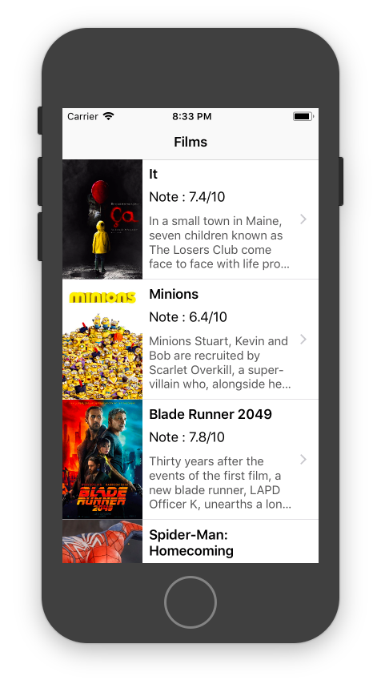

Auto Layout
Introduction
Apple a introduit le système Auto Layout de mise en page de l'interface graphique en 2012, pour la sortie de l'iPhone 5.
Avant, il n'y avait qu'une seule taille d'écran sur les iPhones, et le système de mise en page de l'époque, très simple, suffisait largement.
Aujourd'hui, Apple recommande de supporter iOS 10 et 11. Pour supporter tous les iPhones compatibles, on doit gérer 4 tailles différentes d'écran. Pour gérer les iPads, on rajoute encore 3 autres tailles. A cela vient s'ajouter la gestion de l'affichage en orientation paysage (« landscape »), en plus de l'orientation portrait.
Auto Layout est l'outil indispensable pour répondre à ces problématiques. Il permet à l'interface graphique d'une application de s'adapter aux différents devices et orientations. Auto Layout réduit, agrandit, ou déplace les différents éléments de l'interface graphique, en fonction du device.
Enfin, Auto Layout aide à gérer l'internationalisation d'une app. En effet, il permet à la mise en page de s'adapter en fonction de la longueur du texte. Cela se révèle bien utile quand on traduit une application, de l'anglais à l'allemand par exemple, car les mots allemands sont en général bien plus longs.
Voici le lien vers la documentation d'Apple sur Auto Layout : https://developer.apple.com/library/content/documentation/UserExperience/Conceptual/AutolayoutPG/index.html
Notions nécessaires : Contraintes de layout, notion de « intrinsic content size », hugging et resistance, Safe Area
Auto Layout par la pratique
Toutes les corrections des TPs sur Auto Layout sont disponibles sur GitHub.
Dans Xcode, sélectionnez File->New->Project..., puis créez un projet « Single View App», et donnez lui le nom « AutoLayout » par exemple.
Interface builder, l'outil de création des interfaces graphiques dans Xcode
Voici à quoi ressemble la partie Interface Builder de Xcode, dans un projet qui contient déjà un bouton.
Activation de Auto Layout
Tout d'abord, assurez-vous que votre fichier Main.storyboard utilise « Auto Layout ». Cela devrait déjà être le cas.
Menus pour ajouter des contraintes d'Auto Layout
Explorez Interface Builder, ses différents menu et onglets. En bas à droite de la partie centrale d'Interface Builder, on trouve les menus d'ajout de contraintes.
Hugging et Resistance
Affichage sur différents devices et orientations
En bas de la partie centrale d'Interface Builder, on trouve les différents devices et orientations. Ceci permet de prévisualiser le rendu de l'interface graphique, avant même de lancer l'applictaion dans le simulateur.
Menu Editor de Xcode
Dans le menu Editor de Xcode, on retrouve également des actions déjà accessibles à d'autres endroits dans Interface Builder.
Erreur dans les contraintes d'Auto Layout
S'il y a une erreur dans les contraintes d'Auto Layout, certaines lignes représentant les contraintes vont apparaître en rouge. Par ailleurs, une flèche dans un rond rouge va apparaître dans la partie « explorateur » des éléments de la vue. Cliquez sur cette flèche pour voir le détail des erreurs.
Erreur dans la console en lançant dans le simulateur
Il est également possible d'avoir des erreurs qui apparaissent dans la console d'Xcode à l'exécution de l'application. Le message "Unable to simultaneously satisfy constraints." veut dire que Auto Layout n'a pas pu trouver une solution de mise en page pour satisfaire toutes les contraintes. Il suggère également des solutions pour résoudre le problème.
2017-10-13 09:22:28.125847+0200 Films[97857:2972007] [LayoutConstraints] Unable to simultaneously satisfy constraints.
Probably at least one of the constraints in the following list is one you don't want.
Try this:
(1) look at each constraint and try to figure out which you don't expect;
(2) find the code that added the unwanted constraint or constraints and fix it.
(
"<NSLayoutConstraint:0x6000000995f0 UIImageView:0x7ffb9bd1b240.height == 150 (active)>",
"<NSLayoutConstraint:0x60400009e140 V:[UIImageView:0x7ffb9bd1b240]-(0)-| (active, names: '|':UITableViewCellContentView:0x7ffb9bd1ab20 )>",
"<NSLayoutConstraint:0x60400009e190 V:|-(0)-[UIImageView:0x7ffb9bd1b240] (active, names: '|':UITableViewCellContentView:0x7ffb9bd1ab20 )>",
"<NSLayoutConstraint:0x60400009f090 'UIView-Encapsulated-Layout-Height' UITableViewCellContentView:0x7ffb9bd1ab20.height == 150 (active)>"
)
Exercice 1 : les 2 boutons
Essayez de re-créer par vous même l'exercice de la demo live avec les 2 boutons de même taille qui restent toujours en bas de l'écran, quelques soient le device et l'orientation.
Pour valider que tout fonctionne comme voulu, sélectionnez les différentes vues de devices dans Interface Builder (les iPhones et iPads), et les orientations portrait et paysage. Également, lancez l'app dans différents simulateurs.

Exercice 2 : la galerie
Essayez de re-créer par vous même le 2ème exercice de la demo live, qui affiche un écran découpé en 4 parties égales. Chaque partie est d'une couleur donnée, et affiche une image et un texte. Pensez bien à tenir compte de la « Safe Area ». Cet affichage doit fonctionner quelques soient le device et l'orientation. Testez notamment dans le simulateur de l'iPhone X.
Les 4 images sont disponibles dans ce fichier .zip : Animals.zip

Exercice 3 : Auto Layout dans les UITableView
Dans cet exercice, vous allez devoir afficher une liste de films.
Reprenez le projet Xcode de l'atelier 3, où vous aviez affiché une liste de films et une vue de détail, ou clonez ce repository qui contient la solution de l'atelier 3 : https://github.com/Formation-iOS/Atelier3_Navigation
Voici à quoi doit ressembler l'affichage de la liste des films. Notez que le titre des films peut prendre plusieurs lignes, par exercice « Guardians of the Galaxy Vol. 2 ». Dans ce cas le texte de la description prendra moins de place.

Quelques indices :
- utilisez un UINavigationController
- utilisez un UITableViewController, avec des cellules de taille fixe
- utilisez les notions de « Content Hugging Priority » et « Content Compression Resistance Priority »
Note : votre classe qui hérite de UITableViewCell devrait être définie dans son propre fichier .swift.
Exercice 4 : cellule de taille dynamiques
Certains synopsis de film sont trop longs et sont tronqués. Nous allons adapter la taille de la cellule à son contenu afin que l'ensemble du synopsis soit visible.
La taille de la cellule va donc dépendre à la fois de la taille du titre du film, mais aussi de sa description.
Pour cela, vous allez utiliser le calcul automatique de dimension de cellule d'une UITableView : UITableViewAutomaticDimension.
override func viewDidLoad() {
super.viewDidLoad()
tableView.estimatedRowHeight = 200
tableView.rowHeight = UITableViewAutomaticDimension
}
A vous de jouer, encore une fois, utilisez Auto Layout ! La cellule doit avoir une hauteur calculable sans ambiguité pour que le sytème marche correctement. Mettez donc bien les contraintes de haut en bas sans en oublier une.
Exercice bonus : Auto Layout dans les UIScrollView
Implémentez une vue de détail scrollable, en utilisant une UIScrollView, contenues dans un UIViewController basique.
Astuce : comme la scrollview ne doit pas scroller en horizontal, ajoutez une contrainte pour lui dire que sa Width doit être égale à celle de sa vue parente
Pour aller plus loin
Les points suivants ne sont pas abordés dans ce cours, car ils sont trop avancés. Néanmoins, il est bon de savoir qu'ils existent, pour y avoir recours au cas où les méthodes moins avancées sont trop limitantes.
Création des contraintes d'Auto Layout dans le code
Documentation d'Apple : Programmatically Creating Constraints
Size-class
Documentation d'Apple : Size-Class-Specific Layout